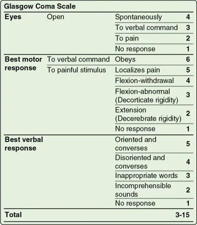
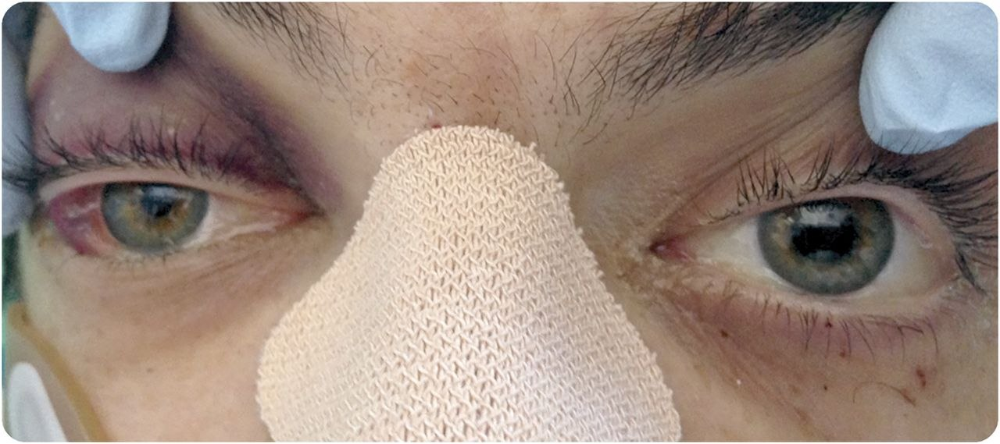
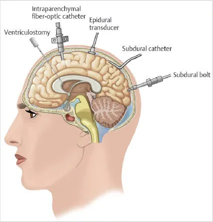
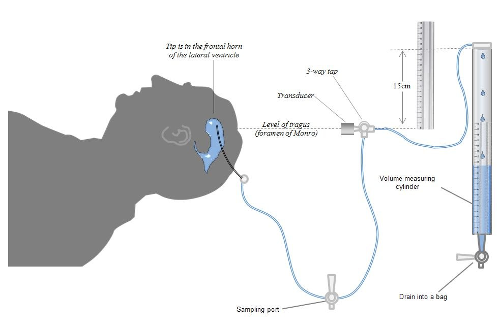
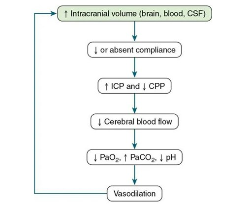

Day 3 · Topic 3
Neuro Assessment and Increased ICP
Things to Bring Forward
Earlier Content This Topic Builds On
- Neurologic assessment: level of consciousness, sensory and motor function, memory, reflexes, respiratory functioning.
- Glasgow Coma Scale (GCS): eyes, motor and verbal responses.
- Stroke: from pathopharm and med-surg.
Neurologic Assessment
The most important focused assessment: neurologic function controls so many of the other body systems. Two parts: brain function and spinal function.
| Assessment | What to Know |
|---|---|
| Level of consciousness |
|
| Glasgow Coma Scale |
|
| Sensory and motor function |
|
| Memory and reflexes |
|
| Respiratory functioning |
|
The levels of consciousness and the focused neuro assessment are taught in the Neuro review
Glasgow Coma Scale (GCS)
| Best Motor Response | At the Bedside |
|---|---|
| Obeys (6) | Squeezes the hands, wiggles the toes, on a verbal command. |
| Localizes pain (5) | Shakes the hand when the nail bed is squeezed. |
| Flexion-withdrawal (4) | Moves the hand a little. |
Total: 3 to 15. The lowest GCS is 3.
The full Glasgow Coma Scale, eyes, motor and verbal, is taught in the Neuro review
Scoring the Sedated or Intubated Patient
- Paralyzed and sedated on purpose: GCS 3. Comment in the GCS box that the patient is paralyzed and sedated.
- Sedation vacation (sedation break): sedation titrated down or paused, usually once a day, for a neuro status. Neurologic issues can be hidden in paralyzed and sedated patients.
- Intubated or trached: no verbal response, so the score carries a T: 10T, 11T. Eyes open and following commands, but not talking.
- Baseline: dementia can lower the GCS. Disoriented but conversing: GCS 14.
GCS scores and airway protection are taught in Respiratory and Progressive Issues in Critical Care
Posturing
Decorticate Posturing
- Muscles: all turn in.
- Arms: bent toward the center of the body. Curled wrists, balled hands against the chest.
- Legs: rigid and extended. Toes pointed and turned in.
- GCS motor score: 3, flexion-abnormal.
Decerebrate Posturing
- Muscles: all turn out.
- Arms: straight, tense and parallel to the body. Flexed wrists, curled fingers.
- Legs: rigid and extended. Toes pointed and turned in.
- GCS motor score: 2, extension.

Pupils and Breathing Patterns
Pupil Checks
- Crucial in high-risk patients, especially the sedated, who may not obey commands, and for whom a sedation vacation may not be possible.
- Any change is a neurologic issue: one or both pupils blown, or not reactive to light.
- Compare with the baseline: reactive to light earlier in the night, and not now, is a big deal.
- Time is brain cells: decompression or another intervention may help, but only once the change is noticed. Check neuro status together at bedside report.

Breathing Patterns in Neurologic Disorders
- Abnormal patterns show where in the brain the lesion is. All are very abnormal.
- These patients are usually intubated, so the pattern is seen with the ventilator paused, or when care is withdrawn and the patient extubated.
- Withdrawal of care: reassure the family the patient is comfortable. The pattern is the result of what is going on physiologically.
- Examples: Cheyne-Stokes respiration, apneustic breathing, cluster breathing.
Increased Intracranial Pressure (ICP)
0 to 15 mmHg
Normal ICP.
Above 20
Increased.
Above 20, Over 5 Minutes
Life-threatening: brain tissue may be dying, or ischemia occurring.
Can result from: head injury, bleeding in the brain, tumors, infections, extra fluid in the brain, stroke.
Three Components of Cranial Pressure
What Makes Up Cranial Pressure
- Cerebral tissue: the brain itself.
- Blood: arterial and venous flow, perfusing and draining the brain.
- Cerebrospinal fluid (CSF): held in the ventricles.
Causes of Increased ICP
| Cause | What to Know |
|---|---|
| Cerebral edema |
|
| Increased cerebral blood volume |
|
| Increased CSF |
|
Signs of Increased ICP
Vital Sign Changes
- Cushing's triad: bradycardia, irregular respirations and a widened pulse pressure.
Other Symptoms, If Awake
- Significant headache: one of the big ones.
- Vomiting, blurred vision.
- Lethargy, weakness.
- Changes in behavior.
ICP Monitoring and Cerebral Perfusion
ICP Monitoring: What It Is For
- Correlates objective data with the clinical picture to look at cerebral perfusion. The aim is a perfused brain and a stable neurologic status, not the number itself.
- Usually for patients with a GCS of 3 to 8.
- Assesses response to therapy: is the ICP decreasing after part of the skull is removed?
- Classified by location of the device or type of transducer: epidural, ventriculostomy and others.
- Ventricular devices are the most common: a catheter into a ventricle, connected to a drainage bag. Drains CSF in a controlled manner and monitors ICP.
- Shows the ICP waveform.
- Read with the other assessments of perfusion: level of consciousness, nerve function, pupil changes.


Cerebral Perfusion Pressure (CPP)
CPP Targets
- Normal: 60 to 100.
- Goal for neurological injuries: above 70, for enough blood flow to heal, bringing oxygenated, nutritious blood to the injured area.
- Usually needs a higher MAP than normal, or the ICP kept as low as possible.
- Example: an ICP of 20 needs a MAP of 90 for a CPP of 70.

Managing Increased ICP
Monitoring and Support for High ICP
- Monitor and assess neurologic status: often sedated, so pupils, reflexes, posturing, response to pain and vital signs, with the ICP.
- Maintain the airway, provide ventilation and oxygenation, decrease the brain's metabolic demands. Usually established early.
- Usually sedated and paralyzed, to let the brain rest, with high MAPs for perfusion.
| Nursing Care | What to Know |
|---|---|
| Positioning |
|
| Turning |
|
| Endotracheal suctioning |
|
| Hygiene |
|
| Family |
|
Medical Management of Increased ICP and CPP
| Intervention | What to Know |
|---|---|
| Oxygenation and ventilation |
|
| Diuretics |
|
| Fluid administration |
|
| BP management |
|
PEEP is taught in Oxygen Therapy and Mechanical Ventilation
Vasoactive medications are taught in Shock, Sepsis, MODS
Reducing Metabolic Demands
| Measure | What to Know |
|---|---|
| Temperature control |
|
| Sedation |
|
| Avoiding seizures |
|
| Paralytics (neuromuscular blockade) |
|
| Surgical intervention |
|
Psychosocial Impact of Traumatic Neurological Injury
Supporting the Patient and Family
- Sudden and unexpected: no one wakes up expecting a stroke, a car accident or a fall.
- Life-changing: may be paralyzed for good, or have lifelong or temporary neurologic impairment.
- Support the psychosocial needs of the patient and the family.
- Keep the room's energy and mood conducive to healing: patience, encouragement, calm energy.